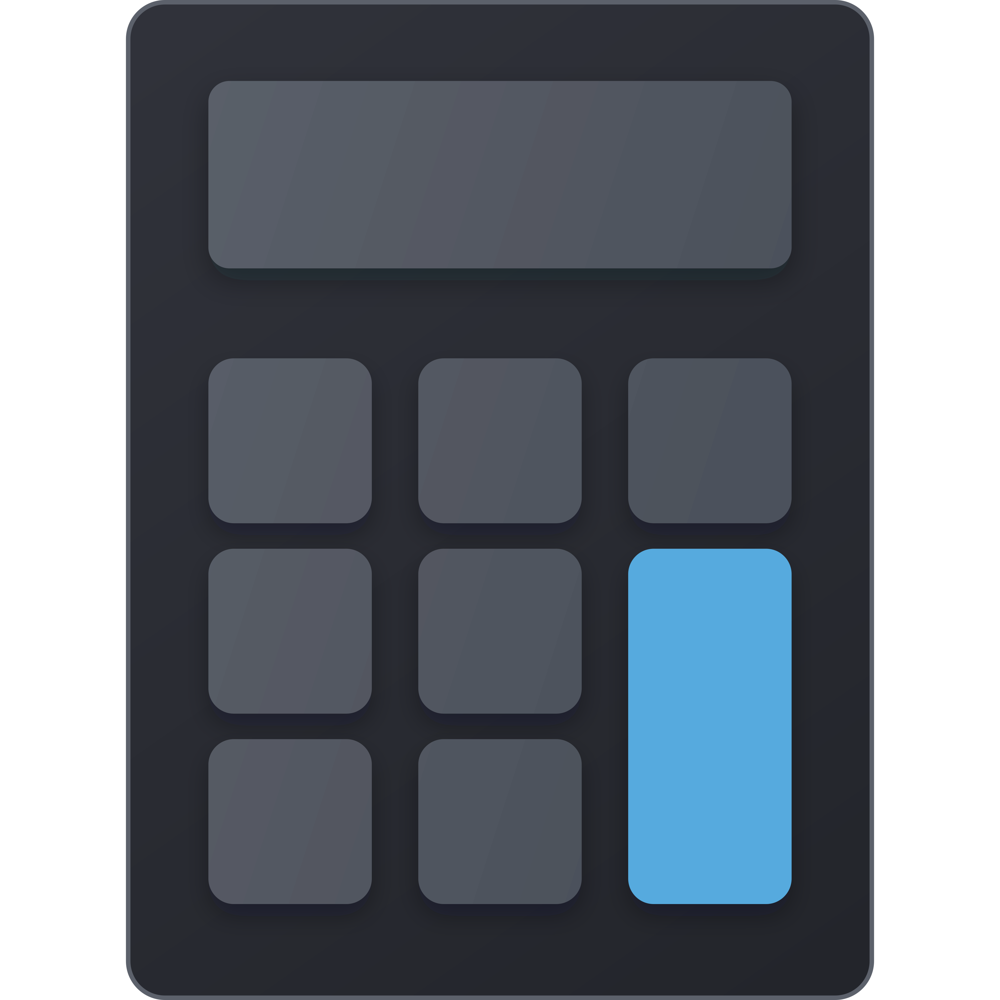
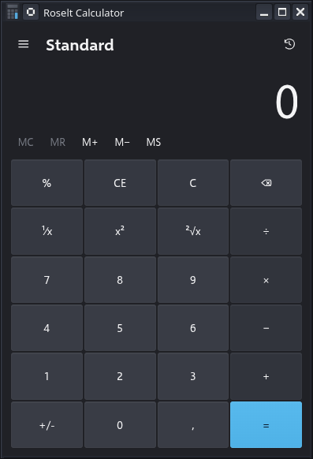

Multiple modes, one interface
Switch between standard, scientific, programmer, graphing, date, and converter tools without leaving the same shell.

Calculator Web editionWindows Calculator inspired. Browser native.
Calculator brings standard, scientific, programmer, graphing, date, history, memory, and unit conversion tools into a fast installable experience that runs entirely in the browser.

Why this app
Switch between standard, scientific, programmer, graphing, date, and converter tools without leaving the same shell.
Keyboard support, persistent state, and focused layouts keep the app usable for repeat work, not just quick demos.
Use it in the browser first, then pin it as an installable PWA when you want a dedicated desktop or mobile experience.
Modes
The design takes cues from Windows Calculator while adapting the experience for the web, touch input, and installable workflows.
Install and go
Calculator runs entirely client side, supports installation as a progressive web app, and keeps your working state close at hand whether you open it in a tab or as a standalone window.
Ready to try it
Open the app directly, or install it later once it earns a place in your daily toolkit.